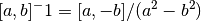

dmft.dimer¶
Dimer Bethe lattice¶
Non interacting dimer of a Bethe lattice Based on the work G. Moeller et all PRB 59, 10, 6846 (1999)
Functions¶
-
dmft.dimer.diag_loc_fermions(basis_fermions)¶ Rotate diagonal Fermion matrix operators from diagonal to local basis
-
dmft.dimer.dimer_dyson(g0iw_d, g0iw_o, siw_d, siw_o)¶ Returns Dressed Green Function from G0 and Sigma
-
dmft.dimer.ekin(giw_d, giw_o, w_n, tp, beta, t_sqr=0.25)¶ Calculates the total kinetic energy of the dimer Bethe lattice
Parameters: - giw_d (complex 1D ndarray) – Diagonal entry of Green’s function
- giw_o (complex 1D ndarray) – Off diagonal entry of Green’s function
- w_n (real 1D ndarray) – Positive Matsubara frequencies
- tp (float) – Dimer hybridization strength
- beta (float) – Inverse temperature
- t_sqr (float) – squared hopping to lattice, represent they lattice hybridization as
References
See also
Examples using dmft.dimer.ekin¶


-
dmft.dimer.epot(giw_d, w_n, beta, M_3, e_kin, muN)¶ Calculates the total potential energy of the dimer
Parameters: - giw_d (complex 1D ndarray) – Diagonal entry of Green’s function
- w_n (real 1D ndarray) – Positive Matsubara frequencies
- beta (float) – Inverse temperature
- M_3 (float) – Third Moment in tail expansion of
- e_kin (float) – Kinetic energy of the dimer
- muN (float) – Chemical potential weighted by occupation
References
See also
Examples using dmft.dimer.epot¶
-
dmft.dimer.extract_flat_gf_iter(filename, u_int, last)¶ Returns a list with Green functions of last iterations
At each iteration there are 4 Green functions sym_up, sym_dw, asym_up, asym_dw. Each one of them is extracted individually and is an element of the list.
N.B. Because at half-filling there is particle-hole symmetry the sym=-conj(asym).
Parameters: Returns: ndarray of shape
Return type: last x 4 x nfreq
Examples using dmft.dimer.extract_flat_gf_iter¶
-
dmft.dimer.get_sigmaiw(giw_d, giw_o, w_n, tp)¶ Return Sigma by dyson in paramagnetic case only 2 entries
-
dmft.dimer.gf_met(omega, mu, tp, t, tn)¶ Double semi-circular density of states to represent the non-interacting dimer
Examples using dmft.dimer.gf_met¶


-
dmft.dimer.hamiltonian(u_int, mu, tp, basis_fermions=None)¶ Generate an isolated bi-atomic Hamiltonian in particle-hole symmetry at mu=0. Include chemical potential for grand Canonical calculations
Parameters: Returns: - h_loc (scipy.sparse.csr.csr_matrix) – Hamiltonian
- basis_fermions (list scipy.sparse.csr.csr_matrix) – fermion desctruction operators in sparse matrix form
Examples using dmft.dimer.hamiltonian¶


-
dmft.dimer.hamiltonian_diag(u_int, mu, tp, basis_fermions=None)¶ Generate an isolated bi-atomic Hamiltonian in particle-hole symmetry at mu=0. Include chemical potential for grand Canonical calculations
This in the diagonal basis [as_up, s_up, as_dw, s_dw]
See also
Examples using dmft.dimer.hamiltonian_diag¶

-
dmft.dimer.ipt_dmft_loop(BETA, u_int, tp, giw_d, giw_o, tau, w_n, conv=1e-12, t=0.5)¶ Self-consistently solve dimer DMFT problem with ipt solver
Parameters: - BETA (float - inverse temperature) –
- u_int (float - onsite interaction) –
- tp (float - dimer hybridization) –
- giw_d (1D ndarray complex - diagonal Green function G_11) –
- giw_o (1D ndarray complex - off-diagonal Green function G_12) –
- tau (1D ndarray real - imaginary time array) –
- w_n (1D ndarray real - matsubara frequency points) –
- conv (float - convergence criteria) –
- t (float - renormalized lattice hopping) –
Returns: - giw_d (1D ndarray complex - diagonal Green function G_11)
- giw_o (1D ndarray complex - off-diagonal Green function G_12)
- loops (int - iterations for converge)
Examples using dmft.dimer.ipt_dmft_loop¶


-
dmft.dimer.mat_2_inv(A)¶ Inverts a 2x2 matrix
-
dmft.dimer.mat_inv(a, b)¶ Inverts the relevant entries of the dimer Green’s function matrix

Examples using dmft.dimer.mat_inv¶
-
dmft.dimer.mat_mul(a, b, c, d)¶ Multiplies two Matrices of the dimer Green’s Functions
-
dmft.dimer.opt_sig(lat_A1, lat_A2, nf, w, dosde)¶ Calculates the optical conductivity from lattice spectral functions

Parameters: - lat_A1 (2D ndarrays) – lattice Spectral functions A(E,w)
- lat_A2 (2D ndarrays) – lattice Spectral functions A(E,w)
- nf (1D ndarray) – fermi function
- w (1D ndarray) – real frequency array
- dosde (1D ndarray) – differentially weighted density of states dE ρ(E)
Returns: - Re σ(w) (1D ndarray)
- Real part of optical conductivity. Posterior scaling required
See also
bubble()
-
dmft.dimer.optical_conductivity(beta, ss, sa, omega, tp, eps_k, eta=0.04, crop=True)¶ Calculate the contributions to the optical_conductivity in the dimer
Parameters: - beta (float - Inverse Temperature) –
- ss (1D complex ndarray - SYM real-freq self-energy) –
- sa (1D complex ndarray - ASYM real-freq self-energy) –
- omega (1D float ndarray - real frequency grid (equispaced)) –
- tp (float - Dimer Hybridization) –
- eps_k (1D float ndarray - Energy level bandwidth (equispaced)) –
- eta (float - broadening for A(eps_k, w)) –
- crop (bool - Return only positive frequencies) –
Returns: - intra_band (Intra band Optical response)
- inter_band (Inter band Optical response)
Examples using dmft.dimer.optical_conductivity¶


-
dmft.dimer.pade_diag(gf_aa, gf_ab, w_n, w_set, w)¶ - Take diagonal and off diagonal Matsubara functions in the local
basis and return real axis functions in the symmetric and anti-symmetric basis. Such that
⎡ⅈ⋅ωₙ + μ - t⟂ 0 ⎤ ⎡Σ_AA + Σ_AB 0 ⎤- G^{-1} = ⎢ ⎥ - ⎢ ⎥
- ⎣ 0 ⅈ⋅ωₙ + μ + t⟂ ⎦ ⎣ 0 Σ_AA - Σ_AB⎦
The Symmetric sum (Anti-bonding) returned first, Asymmetric is returned second
Examples using dmft.dimer.pade_diag¶
-
dmft.dimer.self_consistency(omega, Gd, Gc, mu, tp, t2)¶ Sets the dimer Bethe lattice self consistent condition for the diagonal and out of diagonal block
Examples using dmft.dimer.self_consistency¶


-
dmft.dimer.sorted_basis(basis_numbering=False)¶ Sorts the basis of states for the electrons in the molecule Enforces ordering in particle number an Sz projection
-
dmft.dimer.symdata(gfs_array)¶ Assuming the gfs_array has shape (4, n_freqs) conjugate the last 2 columns to make the complete array be SYM